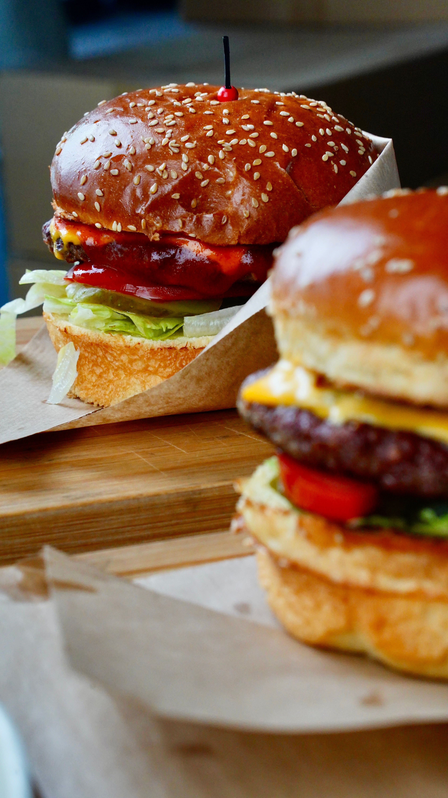

Burger
Home

Description
The classic beef burger is a timeless favourite, made with a juicy grilled patty seasoned with salt, pepper, and garlic powder, sandwiched between a toasted brioche bun. Topped with melted cheddar cheese, crisp lettuce, fresh tomato slices, and tangy pickles, it is finished with a generous spread of ketchup and mustard. Simple to make and impossible to resist, this burger is perfect for a quick weeknight dinner or a weekend barbecue.
Ingredients
- 500g ground beef
- 4 brioche burger buns
- 4 slices cheddar cheese
- 1 large tomato, sliced
- 4 leaves of lettuce
- 1 small onion, sliced
- 8 pickle slices
- 2 tablespoons ketchup
- 2 tablespoons mustard
- 1 teaspoon garlic powder
- Salt and pepper to taste
- 1 tablespoon butter for toasting buns
Steps
- Divide the ground beef into 4 equal portions and shape them into patties about 1cm thick.
- Season both sides of each patty generously with salt, pepper, and garlic powder.
- Heat a grill or pan over high heat and cook the patties for 3-4 minutes on each side.
- Place a slice of cheddar cheese on each patty in the last minute of cooking and let it melt.
- Butter the brioche buns and toast them on the grill or pan until golden brown.
- Spread ketchup and mustard on the bottom half of each bun.
- Place the lettuce leaf on the bottom bun followed by the tomato slices and onion rings.
- Place the cheesy patty on top of the vegetables.
- Add the pickle slices on top of the patty.
- Close with the top bun and serve immediately.